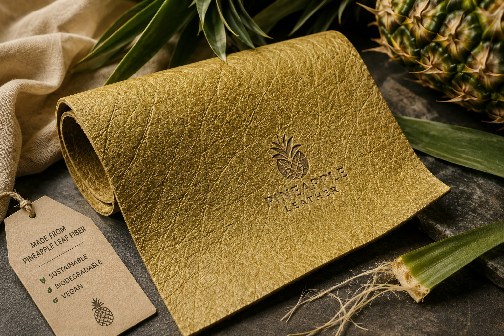

Turning Agricultural Waste into Sustainable Material
The increasing amount of agricultural waste and the growing dependence on conventional non-biodegradable materials have become important environmental concerns. Agricultural activities generate large amounts of waste such as crop residues, fruit peels, fibres, and other plant-based materials. When these wastes are not properly managed, they may contribute to environmental pollution and increase the amount of waste sent to landfills. At the same time, many conventional materials are produced from non-renewable resources and can remain in the environment for a long period of time.
This project focuses on exploring the potential of agricultural waste as a useful raw material for developing a biodegradable material. By converting agricultural waste into a value-added product, the project aims to reduce waste while providing a more environmentally friendly alternative to conventional materials. The use of suitable chemical treatment and formulation methods can help improve the properties of the developed material and make agricultural waste more suitable for practical applications.
The project also demonstrates how waste materials can be transformed into useful products through simple chemical and processing techniques. The developed material will be evaluated based on selected properties such as strength, flexibility, appearance, and biodegradability. These evaluations will help determine the suitability and performance of the material for its intended application.
Overall, this project promotes the concept of waste valorisation, where agricultural waste is not viewed simply as waste but as a potential resource. It also supports sustainable material development by combining agricultural waste utilisation, chemical processing, and environmental sustainability. Through this approach, the project aims to contribute towards reducing waste generation and encouraging the development of more sustainable and biodegradable alternatives.